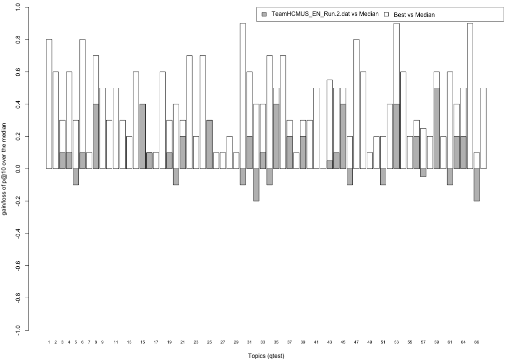
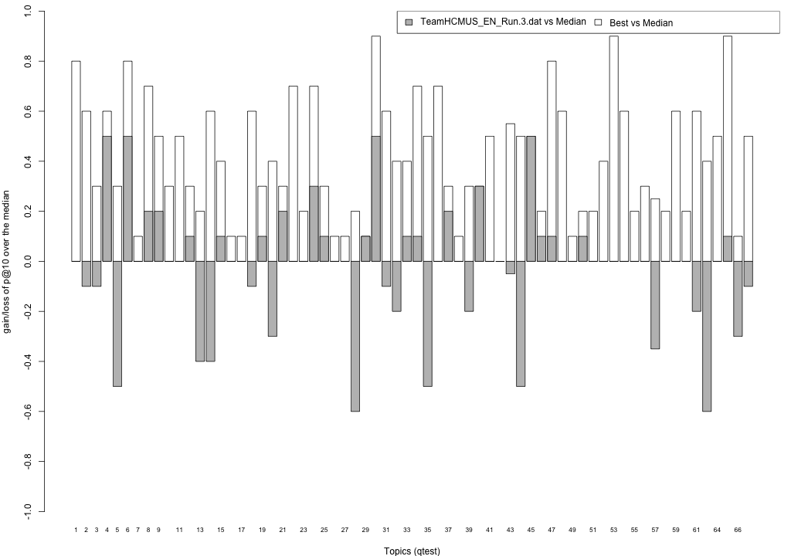

Share/CLEF eHealth 2015 TASK 2 Results - TeamHCMUS_EN_Run
This page summarises the results obtained from your submissions. Here, you can find the mean performance of your submissions, for all standard trec_eval measures and for nDCG at different ranks. For this first year, the Share/CLEF eHealth 2015 TASK 2 built result pools from your submissions considering the top 10 documents ranked by your baseline system (run 1), and the two highest priority runs (run 2 and 3); thus all remaining runs were not sampled to form the assessment pool. This was because, unlike in previous years, submissions were greatly differing between each other, and thus lead to very large (and different) pools. As a consequence:
- the primary measure for this year is precision at 10 (P@10),
- the secondary measure is Normalised Discounted Cumulative Gain at rank 10 (ndcg_cut_10).
Relevance assessments are distributed along with this webpage and are also available from the task website. Assessors judged relevance according to a three point scale: Not Relevant (label 0), Somewhat Relevant (label 1), Highly Relevant (label 2). When computing binary relevance measures (e.g. P@10 and MAP), we mapped label 0 to not relevant, and labels 1 and 2 to relevant; this is encoded in the binary qrels named qrels.clef2015.test.bin.txt. Graded relevance assessments are contained in the qrels.clef2015.test.graded.txt file.
Evaluation with standard trec_eval metrics
These results have been obtained with the binary relevance assessment, i.e. qrels.clef2015.test.bin.txt, and trec_eval 9.0 as distributed by NIST. Trec_eval was ran as follows:
./trec_eval -c -M1000 qrels.clef2015.test.bin.txt runName
TeamHCMUS_EN_Run.1.dat
runid all TeamHCMUS1 num_q all 66 num_ret all 66000 num_rel all 1972 num_rel_ret all 1568 map all 0.2081 gm_map all 0.0696 Rprec all 0.2267 bpref all 0.2840 recip_rank all 0.5451 iprec_at_recall_0.00 all 0.5953 iprec_at_recall_0.10 all 0.4968 iprec_at_recall_0.20 all 0.3611 iprec_at_recall_0.30 all 0.3003 iprec_at_recall_0.40 all 0.2358 iprec_at_recall_0.50 all 0.1907 iprec_at_recall_0.60 all 0.1358 iprec_at_recall_0.70 all 0.0976 iprec_at_recall_0.80 all 0.0707 iprec_at_recall_0.90 all 0.0255 iprec_at_recall_1.00 all 0.0080 P_5 all 0.3879 P_10 all 0.3636 P_15 all 0.3202 P_20 all 0.2886 P_30 all 0.2475 P_100 all 0.1289 P_200 all 0.0818 P_500 all 0.0428 P_1000 all 0.0238
TeamHCMUS_EN_Run.2.dat
runid all TeamHCMUS2 num_q all 66 num_ret all 66000 num_rel all 1972 num_rel_ret all 1515 map all 0.1866 gm_map all 0.0644 Rprec all 0.2044 bpref all 0.2649 recip_rank all 0.5255 iprec_at_recall_0.00 all 0.5841 iprec_at_recall_0.10 all 0.4463 iprec_at_recall_0.20 all 0.3304 iprec_at_recall_0.30 all 0.2807 iprec_at_recall_0.40 all 0.2042 iprec_at_recall_0.50 all 0.1562 iprec_at_recall_0.60 all 0.1156 iprec_at_recall_0.70 all 0.0808 iprec_at_recall_0.80 all 0.0502 iprec_at_recall_0.90 all 0.0248 iprec_at_recall_1.00 all 0.0133 P_5 all 0.3818 P_10 all 0.3348 P_15 all 0.3030 P_20 all 0.2682 P_30 all 0.2187 P_100 all 0.1170 P_200 all 0.0714 P_500 all 0.0393 P_1000 all 0.0230
TeamHCMUS_EN_Run.3.dat
runid all TeamHCMUS3 num_q all 66 num_ret all 66000 num_rel all 1972 num_rel_ret all 1268 map all 0.1407 gm_map all 0.0273 Rprec all 0.1662 bpref all 0.2368 recip_rank all 0.4504 iprec_at_recall_0.00 all 0.5070 iprec_at_recall_0.10 all 0.3479 iprec_at_recall_0.20 all 0.2443 iprec_at_recall_0.30 all 0.2019 iprec_at_recall_0.40 all 0.1453 iprec_at_recall_0.50 all 0.1116 iprec_at_recall_0.60 all 0.0844 iprec_at_recall_0.70 all 0.0613 iprec_at_recall_0.80 all 0.0380 iprec_at_recall_0.90 all 0.0153 iprec_at_recall_1.00 all 0.0060 P_5 all 0.2939 P_10 all 0.2606 P_15 all 0.2374 P_20 all 0.2015 P_30 all 0.1646 P_100 all 0.0894 P_200 all 0.0591 P_500 all 0.0333 P_1000 all 0.0192
TeamHCMUS_EN_Run.4.dat
runid all TeamHCMUS4 num_q all 66 num_ret all 66000 num_rel all 1972 num_rel_ret all 1150 map all 0.1104 gm_map all 0.0199 Rprec all 0.1292 bpref all 0.2065 recip_rank all 0.3555 iprec_at_recall_0.00 all 0.4127 iprec_at_recall_0.10 all 0.2909 iprec_at_recall_0.20 all 0.2061 iprec_at_recall_0.30 all 0.1558 iprec_at_recall_0.40 all 0.1068 iprec_at_recall_0.50 all 0.0808 iprec_at_recall_0.60 all 0.0568 iprec_at_recall_0.70 all 0.0427 iprec_at_recall_0.80 all 0.0283 iprec_at_recall_0.90 all 0.0177 iprec_at_recall_1.00 all 0.0123 P_5 all 0.2394 P_10 all 0.1955 P_15 all 0.1707 P_20 all 0.1629 P_30 all 0.1374 P_100 all 0.0770 P_200 all 0.0508 P_500 all 0.0282 P_1000 all 0.0174
TeamHCMUS_EN_Run.5.dat
runid all TeamHCMUS5 num_q all 66 num_ret all 66000 num_rel all 1972 num_rel_ret all 698 map all 0.0669 gm_map all 0.0020 Rprec all 0.0774 bpref all 0.1763 recip_rank all 0.3852 iprec_at_recall_0.00 all 0.4048 iprec_at_recall_0.10 all 0.2095 iprec_at_recall_0.20 all 0.1267 iprec_at_recall_0.30 all 0.0685 iprec_at_recall_0.40 all 0.0398 iprec_at_recall_0.50 all 0.0300 iprec_at_recall_0.60 all 0.0195 iprec_at_recall_0.70 all 0.0122 iprec_at_recall_0.80 all 0.0040 iprec_at_recall_0.90 all 0.0011 iprec_at_recall_1.00 all 0.0009 P_5 all 0.2121 P_10 all 0.1545 P_15 all 0.1313 P_20 all 0.1083 P_30 all 0.0854 P_100 all 0.0455 P_200 all 0.0294 P_500 all 0.0165 P_1000 all 0.0106
TeamHCMUS_EN_Run.6.dat
runid all TeamHCMUS6 num_q all 66 num_ret all 66000 num_rel all 1972 num_rel_ret all 605 map all 0.0512 gm_map all 0.0012 Rprec all 0.0700 bpref all 0.1469 recip_rank all 0.2667 iprec_at_recall_0.00 all 0.2792 iprec_at_recall_0.10 all 0.1561 iprec_at_recall_0.20 all 0.1058 iprec_at_recall_0.30 all 0.0589 iprec_at_recall_0.40 all 0.0403 iprec_at_recall_0.50 all 0.0318 iprec_at_recall_0.60 all 0.0183 iprec_at_recall_0.70 all 0.0137 iprec_at_recall_0.80 all 0.0021 iprec_at_recall_0.90 all 0.0014 iprec_at_recall_1.00 all 0.0014 P_5 all 0.1455 P_10 all 0.1045 P_15 all 0.0848 P_20 all 0.0780 P_30 all 0.0626 P_100 all 0.0353 P_200 all 0.0236 P_500 all 0.0126 P_1000 all 0.0092
TeamHCMUS_EN_Run.7.dat
runid all TeamHCMUS7 num_q all 66 num_ret all 66000 num_rel all 1972 num_rel_ret all 661 map all 0.0653 gm_map all 0.0017 Rprec all 0.0839 bpref all 0.1684 recip_rank all 0.3875 iprec_at_recall_0.00 all 0.4026 iprec_at_recall_0.10 all 0.2007 iprec_at_recall_0.20 all 0.1210 iprec_at_recall_0.30 all 0.0616 iprec_at_recall_0.40 all 0.0397 iprec_at_recall_0.50 all 0.0291 iprec_at_recall_0.60 all 0.0228 iprec_at_recall_0.70 all 0.0163 iprec_at_recall_0.80 all 0.0026 iprec_at_recall_0.90 all 0.0016 iprec_at_recall_1.00 all 0.0007 P_5 all 0.2212 P_10 all 0.1470 P_15 all 0.1242 P_20 all 0.1083 P_30 all 0.0848 P_100 all 0.0438 P_200 all 0.0281 P_500 all 0.0160 P_1000 all 0.0100
TeamHCMUS_EN_Run.8.dat
runid all TeamHCMUS8 num_q all 66 num_ret all 66000 num_rel all 1972 num_rel_ret all 540 map all 0.0462 gm_map all 0.0007 Rprec all 0.0602 bpref all 0.1312 recip_rank all 0.2484 iprec_at_recall_0.00 all 0.2583 iprec_at_recall_0.10 all 0.1367 iprec_at_recall_0.20 all 0.0946 iprec_at_recall_0.30 all 0.0510 iprec_at_recall_0.40 all 0.0396 iprec_at_recall_0.50 all 0.0306 iprec_at_recall_0.60 all 0.0178 iprec_at_recall_0.70 all 0.0162 iprec_at_recall_0.80 all 0.0004 iprec_at_recall_0.90 all 0.0002 iprec_at_recall_1.00 all 0.0002 P_5 all 0.1424 P_10 all 0.0970 P_15 all 0.0747 P_20 all 0.0667 P_30 all 0.0495 P_100 all 0.0270 P_200 all 0.0196 P_500 all 0.0113 P_1000 all 0.0082
Evaluation with nDCG
These results have been obtained with the graded relevance assessment, i.e. qrels.clef2015.test.graded.txt, and trec_eval 9.0 as distributed by NIST.To obtain nDCG at different ranks, trec_eval was ran as follows:
./trec_eval -c -M1000 -m ndcg_cut qrels.clef2015.test.graded.txt runName
This computes nDCG according to Jarvelin and Kekalainen (ACM ToIS v. 20, pp. 422-446, 2002). Gain values are the relevance values in the qrels file (i.e. label 0 corresponds to gain 0, label 1 to gain 1 and label 2 to gain 2).
TeamHCMUS_EN_Run.1.dat
ndcg_cut_5 all 0.3259 ndcg_cut_10 all 0.3323 ndcg_cut_15 all 0.3175 ndcg_cut_20 all 0.3070 ndcg_cut_30 all 0.3039 ndcg_cut_100 all 0.3399 ndcg_cut_200 all 0.3824 ndcg_cut_500 all 0.4276 ndcg_cut_1000 all 0.4482
TeamHCMUS_EN_Run.2.dat
ndcg_cut_5 all 0.3211 ndcg_cut_10 all 0.3137 ndcg_cut_15 all 0.3063 ndcg_cut_20 all 0.2939 ndcg_cut_30 all 0.2827 ndcg_cut_100 all 0.3156 ndcg_cut_200 all 0.3521 ndcg_cut_500 all 0.3989 ndcg_cut_1000 all 0.4273
TeamHCMUS_EN_Run.3.dat
ndcg_cut_5 all 0.2370 ndcg_cut_10 all 0.2341 ndcg_cut_15 all 0.2320 ndcg_cut_20 all 0.2232 ndcg_cut_30 all 0.2210 ndcg_cut_100 all 0.2460 ndcg_cut_200 all 0.2794 ndcg_cut_500 all 0.3230 ndcg_cut_1000 all 0.3439
TeamHCMUS_EN_Run.4.dat
ndcg_cut_5 all 0.1932 ndcg_cut_10 all 0.1866 ndcg_cut_15 all 0.1811 ndcg_cut_20 all 0.1852 ndcg_cut_30 all 0.1832 ndcg_cut_100 all 0.2102 ndcg_cut_200 all 0.2392 ndcg_cut_500 all 0.2776 ndcg_cut_1000 all 0.3028
TeamHCMUS_EN_Run.5.dat
ndcg_cut_5 all 0.1809 ndcg_cut_10 all 0.1574 ndcg_cut_15 all 0.1468 ndcg_cut_20 all 0.1377 ndcg_cut_30 all 0.1303 ndcg_cut_100 all 0.1388 ndcg_cut_200 all 0.1523 ndcg_cut_500 all 0.1764 ndcg_cut_1000 all 0.1960
TeamHCMUS_EN_Run.6.dat
ndcg_cut_5 all 0.1353 ndcg_cut_10 all 0.1139 ndcg_cut_15 all 0.1042 ndcg_cut_20 all 0.1011 ndcg_cut_30 all 0.0977 ndcg_cut_100 all 0.1066 ndcg_cut_200 all 0.1199 ndcg_cut_500 all 0.1337 ndcg_cut_1000 all 0.1567
TeamHCMUS_EN_Run.7.dat
ndcg_cut_5 all 0.1879 ndcg_cut_10 all 0.1550 ndcg_cut_15 all 0.1448 ndcg_cut_20 all 0.1368 ndcg_cut_30 all 0.1297 ndcg_cut_100 all 0.1345 ndcg_cut_200 all 0.1473 ndcg_cut_500 all 0.1699 ndcg_cut_1000 all 0.1878
TeamHCMUS_EN_Run.8.dat
ndcg_cut_5 all 0.1322 ndcg_cut_10 all 0.1078 ndcg_cut_15 all 0.0966 ndcg_cut_20 all 0.0917 ndcg_cut_30 all 0.0828 ndcg_cut_100 all 0.0880 ndcg_cut_200 all 0.1010 ndcg_cut_500 all 0.1205 ndcg_cut_1000 all 0.1403
Readability-biased evaluation
For this year task, we have considered the factor of understandability of information (or readability) within the evaluation of the submissions, along with the topicality factor (normally referred to as (topical) relevance). Thus, along with (topical) relevance assessments (qrels), we have collected readability assessments (qread). These assessments were provided by judges along with the relevance assessments; however readability was assumed to be assessed independently of (topical) relevance. To account for understandability/readability in the evaluation, we have computed an understandability biased measure, uRBP, as defined in Zuccon&Koopman, "Integrating understandability in the evaluation of consumer health search engines", MedIR 2014. We refer to that publication for the motivations and the details of the measure; note however that we did not use automated readability measures to estimate readability - we instead had actual readability assessments from the relevance assessors. Readability assessments were given on a 4 point scale (from 0 to 3): It is very technical and difficult to read and understand (label 0), It is somewhat technical and difficult to read and understand (label 1), It is somewhat easy to read and understand (label 2), It is very easy to read and understand (label 3).
The results below have been obtained with the binary relevance assessments (i.e. qrels.clef2015.test.bin.txt) and the graded readability assessments (i.e. i.e. qread.clef2015.test.graded.txt), and ubire-v0.1.0 as distributed on GitHub.The tool was ran as follows:
java -jar /tools/ubire.0.1.jar --qrels-file=qrels/qrels.clef2015.test.bin.txt --qread-file=qrels/qread.clef2015.test.graded.txt --readability --rbp-p=0.8 --ranking-file=runName
This computes RBP, and two versions of uRBP. The user persistence parameter p of RBP (and uRBP) was set to 0.8 following Park&Zhang, "On the distribution of user persistence for rank-biased precision", ADCS 2007. uRBP has been computed by using user model 1 of Zuccon&Koopman with threshold=2, i.e. documents with a readability score of 0 or 1 where deemed not readable and thus had P(U|k)=0, while documents with a readability score of 2 or 3 where deemed readable and thus had P(U|k)=1. uRBPgr has been computed by mapping graded readability scores to different probability values, in particular: readability of 0 was assigned P(U|k)=0, readability of 1 was assigned P(U|k)=0.4, readability of 2 was assigned P(U|k)=0.8, readability of 3 was assigned P(U|k)=1.Note that we are still experimenting with these readability-biased measures and thus observations made with the provided measures may not be conclusive.
TeamHCMUS_EN_Run.1.dat
RBP(0.8) all 0.3715 uRBP(0.8) all 0.3017 uRBPgr(0.8) all 0.3062
TeamHCMUS_EN_Run.2.dat
RBP(0.8) all 0.3483 uRBP(0.8) all 0.2556 uRBPgr(0.8) all 0.2698
TeamHCMUS_EN_Run.3.dat
RBP(0.8) all 0.2700 uRBP(0.8) all 0.2012 uRBPgr(0.8) all 0.2089
TeamHCMUS_EN_Run.4.dat
RBP(0.8) all 0.2099 uRBP(0.8) all 0.1467 uRBPgr(0.8) all 0.1582
TeamHCMUS_EN_Run.5.dat
RBP(0.8) all 0.1861 uRBP(0.8) all 0.1299 uRBPgr(0.8) all 0.1386
TeamHCMUS_EN_Run.6.dat
RBP(0.8) all 0.1257 uRBP(0.8) all 0.0746 uRBPgr(0.8) all 0.0861
TeamHCMUS_EN_Run.7.dat
RBP(0.8) all 0.1853 uRBP(0.8) all 0.1266 uRBPgr(0.8) all 0.1348
TeamHCMUS_EN_Run.8.dat
RBP(0.8) all 0.1210 uRBP(0.8) all 0.0698 uRBPgr(0.8) all 0.0808
Plots P@10
The plots below compare each of your runs against the median and best performance (p@10) across all systems submitted to CLEF for each query topic. In particular, for each query, the height of a bar represents the gain/loss of your system and the best system (for that query) over the median system. The height of a bar is then given by:
grey bars: height(q) = your_p@10(q) - median_p@10(q) white bars: height(q) = best_p@10(q) - median_p@10(q)
TeamHCMUS_EN_Run.1.dat
TeamHCMUS_EN_Run.2.dat
TeamHCMUS_EN_Run.3.dat
TeamHCMUS_EN_Run.4.dat
TeamHCMUS_EN_Run.5.dat
TeamHCMUS_EN_Run.6.dat
TeamHCMUS_EN_Run.7.dat
TeamHCMUS_EN_Run.8.dat